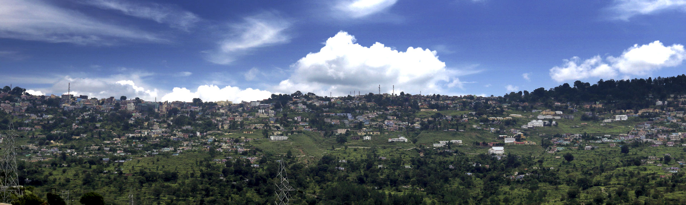

Tripster Company Blog
ALMORA
Introduction
You cannot confuse this with "just another hill-station". Existing since several hundred centuries, Almora retains its charm rendered by its cobbled roads, carved wooden facades, spectacular scenic beauties and age-old temples. True it might, more than once, seem that time stands still here, especially when there is so much to discover in its bend and turns. Almora is almost always used as a stop-over point for excursions to nearby Binsar, Jageshwar and Bageshwar regions, which are frequented by adventure enthusiasts. And not to forget, this land is also credited to having beent he meditating spot for Swami Vivekananda. Visit Almora once at least to feel the cool and invigorating fresh air, enjoy Dusshera celebrations at the Nanda Devi Temple and hear interesting tales of how every neighbourhood got its name. but most of all, visit Almora to view one of the most unforgettable marvels of nature ever - that of the sun rising over the Great Himalayan Range...
Know Your Place
Local Languages: Kumaoni, Hindi & English
Best Time to Visit: Almora can be visited all throughout the year.
Clothing: Cotton clothes and light woolens for summer and heavy woolens for winter.
Moving around: Private taxis and jeeps are available at the car rental desks to take you around the city.
Climate -
Summer: March-June, Cool & pleasant Temperature: 12.0°C-28.0°C
Monsoon: June-September, Moderate rainfall Annual rainfall - 828 mm
Winter: December-February, Extremely cold Temperature: -2.0°C-15.0°C
Places to Visit

Nanda Devi Temple: Believed to be over 200 years old, this temple is dedicated to the patron goddess of Chand Rajahs. The internal and external walls of the temple are carved beautifully with images of gods and goddesses and the temple is especially busy during the annual Nanda Devi Fair,held in September.
Chitai Temple: This sacred temple is dedicated to Gollu Devta, one of the most prominent Kumaoni gods. Thousands of bells are hung
here, which toll whenever a goat is sacrificed before the deity.
Kalimath: Another scenic spot to view the town, the temple of Kasar Devi draws huge crowds. This is also believed to be the spot
where Swami Vivekananda meditated.
Katarmal: Dedicated to the Sun God, this temple is similar to the Konark Sun Temple is Konark. Though much is in ruins, you can
still view some interesting architecture and intricate carvings on the walls.
Simtola: Catch scenic views of Almora from Simtola, located 5 kms away. The setting presents a picture-postcard look with the
continuous range of hills covered in pine and fir trees. Simtola is a popular picnic spot and you can also visit Hiradungi, an
old diamond mine and the Granite Hill.
Khajanchi Mohalla: Literally the treasurer's area, this place is best for watching the old architecture and buildings as devised
by the erstwhile rulers of the region.
Tamta Mohalla: Belonging to the coppersmiths, Tamta Mohalla is one of the most active regions, where you can watch copper being
worked on and molded into different shapes and articles.
Collectorate: The erstwhile Fort of Almora, it is located on the highest point of Almora Bazaar. Climb up to it to catch
360-degree views of the town and neighbouring areas.
Martola: Another picnic spot, Martola is located 10 kms from Almora and boasts of gardens and forests and ample scenic beauty.
Phulseema & Pharkanauli: These are a set of rock paintings, believed to belong to the Bronze-Age. A curious element of these is
the red lines that a drawn on the rocks, which seem to make up the dancing figures.
Post your Experience:
See Past Experiences